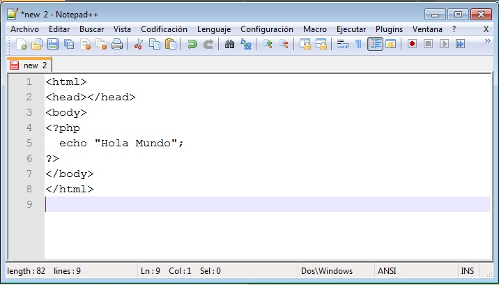
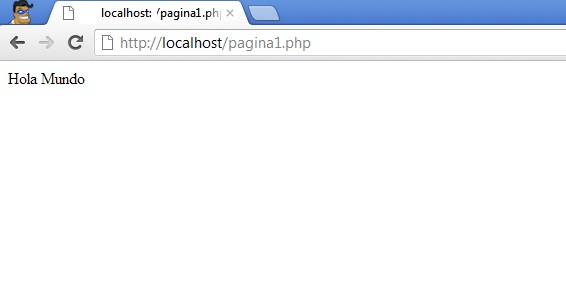

En este curso suponemos que conoce los elementos principales de HTML y algún lenguaje de programación, por lo menos un poquito (puedes iniciar los conceptos básicos de programación en JavaYa)
Para agregar un programa PHP dentro de una página HTML debemos por un lado al crear el archivo definirlo con extensión php (a diferencia de las páginas estáticas que tienen extensión htm o html) y dentro del contenido de la página, encerrar el programa entre los símbolos
<?php [aqui el programa PHP] ?>
El comando de PHP para imprimir dentro de la página se llama echo. Nuestro programa "Hola Mundo" será entonces:
<html> <head></head> <body> <?php echo "Hola Mundo"; ?> </body> </html>
Es decir que la página que se generará al ejecutarse el programa será:
<html> <head></head> <body> Hola Mundo </body> </html>
Podemos utilizar como editor de texto para codificar el programa PHP el
NotePad++.Luego de tipear el programita con el editor de texto:
Debemos almacenar dicho archivo en la subcarpeta www que depende de la carpeta Wamp (en mi caso instalé el WampServer en c:\Wamp)
Lo almacenamos con el nombre pagina1.php en la carpeta C:\wamp\www
Este directorio es el que el servidor web Apache tiene asignado para recuperar páginas cuando se las solicitamos desde un navegador.
Ya tenemos almacenado el archivo en la carpeta www del wamp, ahora procedemos a solicitar dicha página desde un navegador web, para esto en la barra del navegador tipeamos:
http://localhost/pagina1.php

Tenemos en el navegador el resultado de la ejecución del programa.
Como podemos ver, es muy poco útil este programita, ya que el resultado de la ejecución de este programa PHP será siempre el mismo, es decir mostrar el texto "Hola Mundo".
Copiar el contenido de este cuadro de texto al NotePad++ y grabarlo en la carpeta c:\wamp\www con un nombre con extensión php (si hay varios cuadros
de texto grabar cada uno en un archivo distinto).
luego abrir el navegador (Chrome, FireFox, IExplorer etc.) y en la barra de direcciones tipear: http://localhost/pagina1.php (o el nombre del
archivo que le dió)
Confeccione un programa que muestre una serie de mensajes en la página empleando el comando echo. Tenga en cuenta que cuando utiliza el comando echo el mensaje se debe encerrar entre comillas dobles (como veremos más adelante también podrá encerrarse entre simples comillas).
Toda instrucción finaliza con punto y coma.